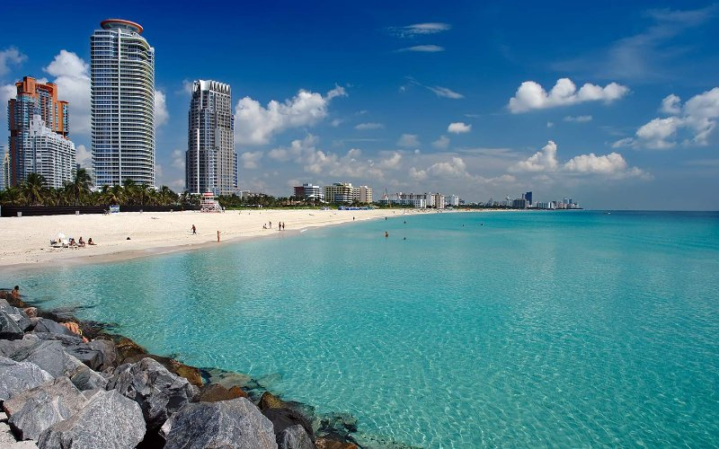
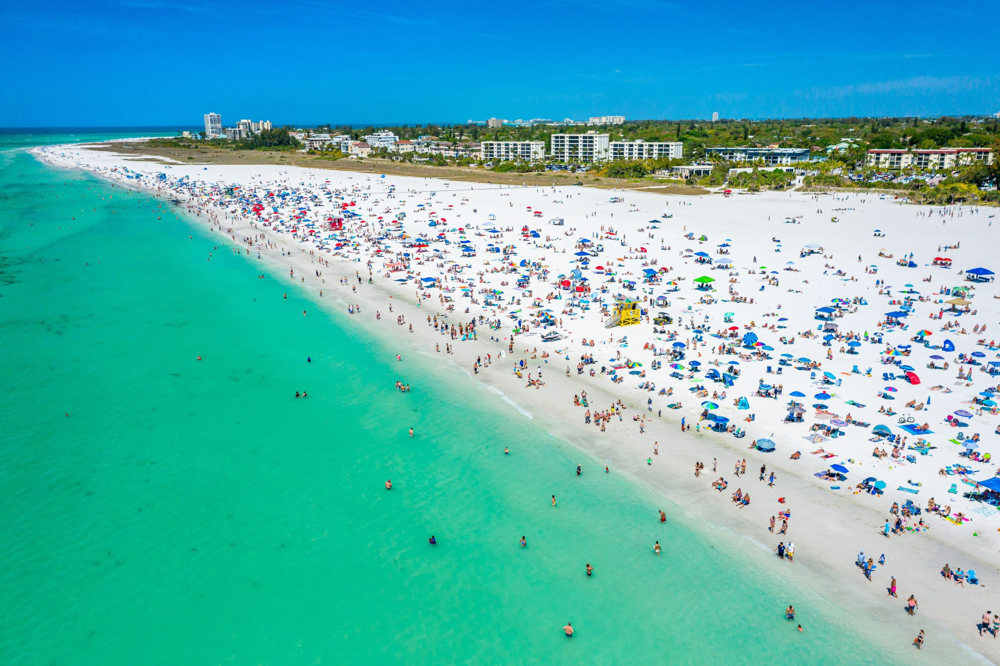
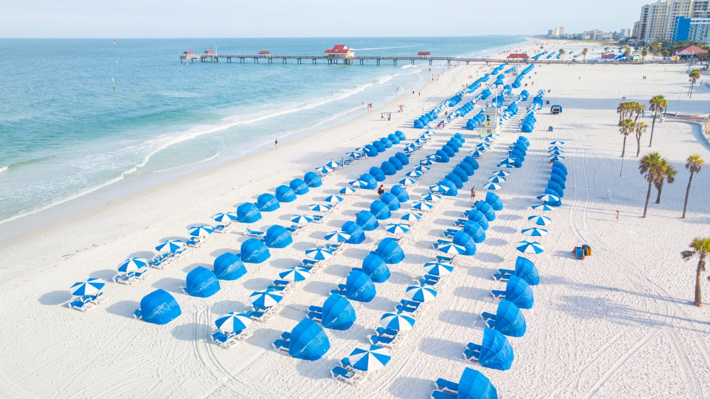

Known for its Art Deco architecture, vibrant nightlife, and stunning white sand.

Famous for its powdery white sand, considered one of the whitest sands in the world.

Offers pristine white sand, calm waters, and a lively atmosphere with plenty of restaurants and shops.